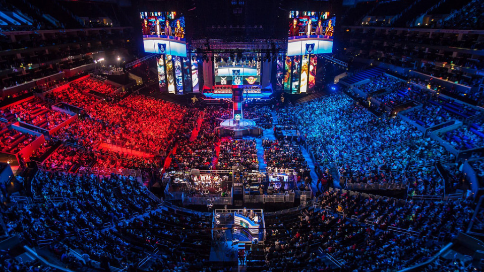

E-Sport
Auf dieser Seite finden Sie Information zu den interdisiplinischen Spielen
Informationen zur Seite ^ _ ^
Erklärung des Begriffs
¼ Der Begriff E-Sport elektronischer Sport; weitere Schreibweisen im deutschsprachigen Raum sind ESport, e-Sport, E-Sports, eSports und e-Sports) bezeichnet den sportlichen Wettkampf zwischen Menschen mit Hilfe von Computerspielen. In der Regel wird der Wettkampf mit Hilfe des Mehrspielermodus eines Computerspieles ausgetragen. Die Regeln des Wettkampfes werden durch die Software (Computerspiel) und externe Wettkampfbestimmungen, wie dem Reglement des Wettkampfveranstalters, vorgegeben. E-Sport wird sowohl auf Personal Computern als auch auf Spielkonsolen betrieben. Die Wettkampfteilnehmer werden E-Sportler genannt; pro Computerspiel kann es mehrere Disziplinen geben. Die meisten Computerspiele werden entweder als Individualsport oder Mannschaftssport betrieben. Bei einzelnen Computerspielen gibt es sowohl auf Individual- als auch auf Mannschaftsebene Wettkämpfe
Bild
called forth exceptional individuals, referred to as 'champions', to battle on the Fields of Justice in order to settle disputes. These champions have joined the League for various reasons. Some are soldiers who have pledged their allegiance to a particular nation and fight in their nation's interests. Some are hallorenowned warriors who seek to prove themselves against Valoran's most powerful beings. Some are prisoners of the League, forced to do the League's bidding as punishment. Some may even be strange creatures from other worlds, hoping to bring stability or further discord to Runeterra. kleinFor whatever the champion's reason, they have gained the interest of the League of Legends. In order to join the League, a potential champion, who has proven to possess extraordinary qualities, must travel to the Institute of War to undergo a Judgement. There, a designated summoner will probe their mind in order to determine the individual's motives. In truth, the intentions of the potential champion has little bearing on whether they are accepted into the League or not. The primary purpose of the Judgement is to determine whether the individual is capable of exposing their mind to the summoner, which would allow the two to share their mental thoughts and act as one. Should the potential champion pass their Judgement, as well as agreeing to the call of the summon, they will have become an official League champion.